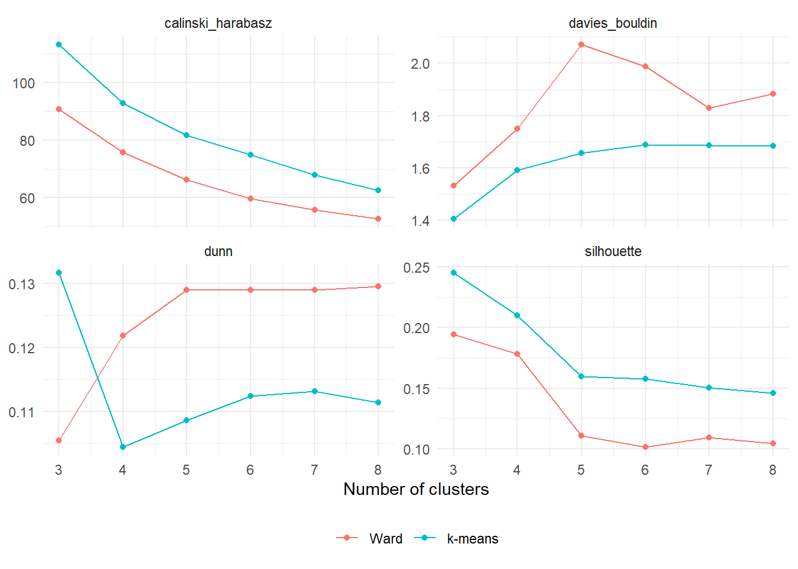
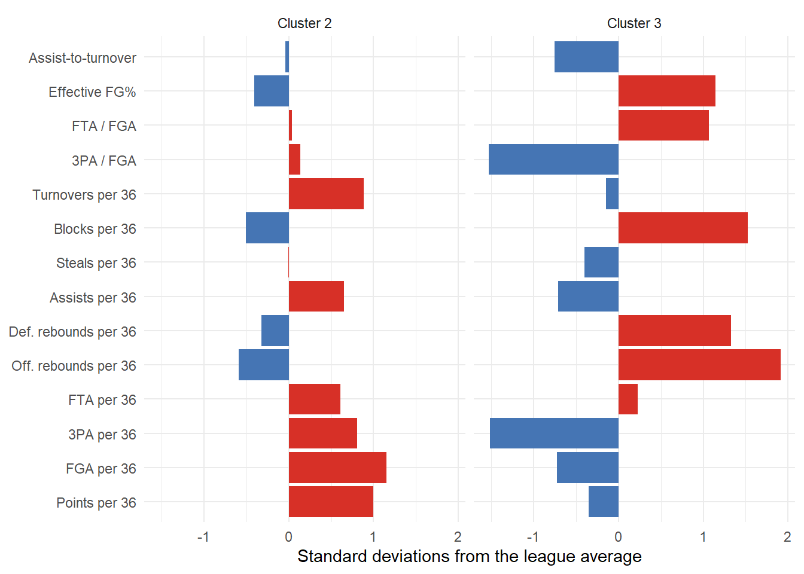

results %>%filter(method !="Gaussian mixture (VEI)") %>% tidyr::pivot_longer(c(silhouette, calinski_harabasz, davies_bouldin, dunn), names_to ="index", values_to ="value") %>%ggplot(aes(k, value, color = method)) +geom_line() +geom_point() +facet_wrap(~index, scales ="free_y") +labs(x ="Number of clusters", y =NULL, color =NULL) +theme_minimal() +theme(legend.position ="bottom")

Four internal indexes across the number of clusters for k-means and Ward linkage.
Three cautions apply to every internal index.
They reward a geometry. All four prefer compact, well-separated, roughly spherical clusters, so they favor k-means-like solutions and penalize density-based or spectral solutions that are correct for a different reason.
They depend on the distance. An index computed under Euclidean distance says nothing about a clustering built under Manhattan or Gower distance. Compare methods only on the same dissimilarity.
They do not test for the existence of clusters. Every index returns a number for a partition of uniform noise. A high value means the partition is good relative to other partitions of the same data, not that the data contain groups.
4 Stability
A clustering that changes when a few players are removed may describe fragile sample boundaries. The helper below draws bootstrap row indices, removes repeated indices, and reclusters the distinct sampled players. This is a resampling perturbation using roughly 63% of the original players, rather than an ordinary bootstrap that retains multiplicities. It holds the original scaling fixed. For each reference cluster, it records the best Jaccard match
among new clusters, evaluated only on players retained in that replicate. Values near 1 indicate reproducibility under this perturbation. Values such as 0.75 are descriptive heuristics, not hypothesis-test thresholds. For a full pipeline assessment, refit preprocessing in each replicate. Section 6.7 demonstrates a complementary approach that assigns all players to each refitted solution.
Some archetypes are stable and some are not, and the unstable ones are usually the clusters carved out of the middle of the continuum. The k-means clusters are considerably more stable than Ward’s: the greedy merges of the hierarchical tree change when a few players are removed, and the six-cluster cut changes with them. Report cluster-wise stability rather than a single average: a solution with four stable clusters and two unstable ones is a different finding from one with six mediocre clusters.
Stability tends to fall as rises, and a sharp drop marks the resolution beyond which the partition is mostly sampling noise. Combined with the internal indexes and the purpose, this is the most defensible way to choose .
5 External agreement
Two partitions can be compared with the adjusted Rand index. Count the pairs of observations that are together in both partitions, apart in both, or split; the Rand index is the share of agreeing pairs, and the adjustment subtracts what chance would produce:
where is the number of observations in cluster of the first partition and cluster of the second, and , are the row and column totals. It equals 1 for identical partitions and is near 0 for unrelated ones.
Normalized mutual information measures how much knowing one partition reduces uncertainty about the other,
with the mutual information and the entropy of each labeling. It is also 1 for identical partitions and 0 for independent ones, but its finite-sample value depends on the number and balance of clusters. It is not adjusted for chance.
data.frame(comparison =c("k-means versus position", "Ward versus position", "mixture versus position"),nmi =c(normalized_mutual_information(kmeans_6, profiles$position_group),normalized_mutual_information(ward_6, profiles$position_group),normalized_mutual_information(gmm$classification, profiles$position_group) )) %>% knitr::kable(digits =2, row.names =FALSE)
comparison
nmi
k-means versus position
0.25
Ward versus position
0.23
mixture versus position
0.19
The methods agree with each other more than any of them agrees with listed positions. That is the expected pattern and it should not be read as an error rate. Positions are coarse labels with three levels, assigned by convention, and they were deliberately excluded from the features. Agreement with an external label is evidence that the clusters capture something real; disagreement is often the finding, for example that “forward” covers several distinct roles.
WarningExternal labels are not ground truth
Evaluating a clustering by its agreement with positions treats positions as the answer, and then the best method is the one that recovers positions, which a supervised classifier would do far better. Use external labels to interpret and to sanity-check, not to score.
6 Sensitivity to decisions
Tutorial 6.1 listed the decisions that define a dissimilarity. The cheapest validation is to change one at a time and measure how much the partition moves.
set.seed(431)baseline <- kmeans_6variants <-list("square-root transform of skewed rates"= { Z <- profiles %>%select(all_of(profile_features)) %>%mutate(across(c(blk_36, stl_36, oreb_36, fg3a_36, fta_36), sqrt)) %>%as.matrix() %>%scale()kmeans(Z, 6, nstart =50, iter.max =100)$cluster },"drop scoring-volume features"= { Z <- X[, setdiff(profile_features, c("pts_36", "fga_36", "fta_36"))]kmeans(Z, 6, nstart =50, iter.max =100)$cluster },"first five principal components"= { Z <-prcomp(X)$x[, 1:5]kmeans(Z, 6, nstart =50, iter.max =100)$cluster },"double weight on shot selection"= { Z <- X Z[, c("three_rate", "ft_rate", "fg3a_36")] <- Z[, c("three_rate", "ft_rate", "fg3a_36")] *sqrt(2)kmeans(Z, 6, nstart =50, iter.max =100)$cluster },"Manhattan distance with k-medoids"=pam(dist(X, method ="manhattan"), 6)$clustering,"different random seed only"= {set.seed(2024)kmeans(X, 6, nstart =50, iter.max =100)$cluster })data.frame(variant =names(variants),adjusted_rand_index_with_baseline =sapply(variants, function(v) adjusted_rand_index(baseline, v))) %>% knitr::kable(digits =2, row.names =FALSE)
variant
adjusted_rand_index_with_baseline
square-root transform of skewed rates
0.86
drop scoring-volume features
0.71
first five principal components
0.93
double weight on shot selection
0.78
Manhattan distance with k-medoids
0.52
different random seed only
0.99
Read the table as a ranking of what matters. A decision whose change moves the partition as much as switching to a different method deserves a sentence in the report; a decision that changes almost nothing can be mentioned and dismissed.
7 Communicating a clustering
7.1 What to show
Cluster profiles as a heat map of standardized centers (Tutorial 6.2) or as small bar charts, one per cluster. Radar charts are popular and hard to read; their enclosed area depends on the arbitrary order of the axes.
Example players for each cluster, chosen by playing time or by closeness to the center, and the players that fit worst.
Sizes, because a cluster of eight players is a different object from a cluster of eighty.
Uncertainty: silhouettes, mixture responsibilities, or resampling stability, so that a reader knows which boundaries are real.
A low-dimensional picture with an explicit statement of how much variance it shows.
centers <-sapply(sort(unique(kmeans_6)), function(j) colMeans(X[kmeans_6 == j, , drop =FALSE]))colnames(centers) <-paste("Cluster", sort(unique(kmeans_6)))two <-order(centers["blk_36", ], decreasing =TRUE)[c(1, 6)]as.data.frame(centers[, two]) %>% tibble::rownames_to_column("feature") %>% tidyr::pivot_longer(-feature, names_to ="cluster", values_to ="z") %>%mutate(feature =factor(feature_labels[feature], levels = feature_labels[profile_features])) %>%ggplot(aes(z, feature, fill = z >0)) +geom_col(show.legend =FALSE) +facet_wrap(~cluster) +scale_fill_manual(values =c("TRUE"="#d73027", "FALSE"="#4575b4")) +labs(x ="Standard deviations from the league average", y =NULL) +theme_minimal()

One communication format: standardized profiles of two clusters with their example players.
7.2 What to say
A clustering report should state, in this order:
the question, and whether the goal was archetypes or comparables;
the observations, the features, and the transformations, standardization, and weights;
the dissimilarity and the algorithm, with its settings;
how the number of clusters was chosen, and what the alternatives looked like;
the clusters, with profiles, sizes, and examples;
stability and sensitivity results, cluster by cluster; and
what the clusters do not mean.
7.3 What the clusters do not mean
Clusters describe the season’s data, not ability or value. A player in the “low-usage” cluster may have been asked to play that way.
Clusters are not causal. Two players in one cluster share a profile, not a reason for it.
Clusters are not positions, and disagreement with positions is not an error.
The number of clusters is a resolution, not a discovery.
“The algorithm found” is the wrong subject. The analyst chose the features, the distance, the method, and ; the algorithm computed a consequence of those choices.
8 Practice
Two partitions of 100 players agree on 95% of pairs. Why can their adjusted Rand index still be low?
A cluster has mean bootstrap Jaccard 0.45. What should the report say about it?
Why is a high Calinski-Harabasz value for a DBSCAN solution not evidence against DBSCAN?
Give one preprocessing change that you would expect to move the partition a great deal and one that you would expect to move it little.
TipShow answers
Most pairs are apart in any partition with several clusters, so high raw agreement is expected by chance; the adjustment removes that baseline, and the remaining agreement can be small.
That the cluster dissolves under resampling and should not be interpreted as an archetype, even if it is convenient to name.
The index rewards compact spherical clusters, which DBSCAN does not seek; a density cluster with an irregular shape scores poorly by construction.
Dropping or reweighting a block of correlated features moves the partition a great deal; changing the random seed with many restarts should move it little.
9 Key takeaways
Validation without truth means internal quality, stability, external agreement, sensitivity, and usefulness; check all of them.
Internal indexes rank partitions under one distance and one geometry; they cannot certify that clusters exist.
Bootstrap Jaccard stability, reported cluster by cluster, is the most direct test of whether an archetype is real.
Adjusted Rand index and normalized mutual information compare partitions; external labels inform interpretation but are not scores.
Report the decisions, the uncertainty, and the limitations; the algorithm is not the author of the result.